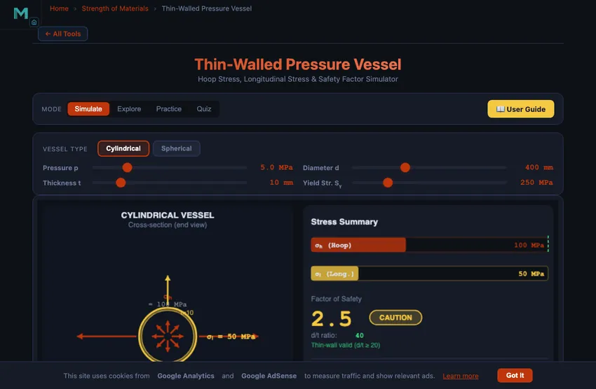
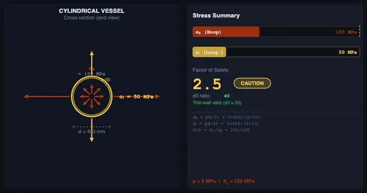

Hoop Stress Calculator — Thin-Walled Pressure Vessel
3D Model — Hoop Stress Calculator — Thin-Walled Pressure Vessel
Free hoop stress calculator for thin-walled pressure vessels — σh = Pd/2t, longitudinal stress and factor of safety for cylindrical and spherical vessels under internal pressure.
Hoop Stress, Longitudinal Stress & Safety Factor Simulator
Click “New Question” to start.
Press “Start Quiz” to begin a 5-question pressure vessel quiz.
1 Overview
The Pressure Vessel Simulator analyses thin-walled cylindrical and spherical vessels under internal pressure. It calculates hoop stress (σh = pd/2t), longitudinal stress (σL = pd/4t), factor of safety (yield strength / max stress), and verifies the thin-wall assumption (d/t > 20). The simulator also identifies whether the vessel is safe, marginal, or overstressed based on the computed safety factor.
Pressure vessels are used in boilers, gas cylinders, pipelines, chemical reactors, and hydraulic accumulators. Understanding hoop and longitudinal stress is fundamental to safe vessel design — hoop stress is always the dominant stress in cylindrical vessels, being exactly twice the longitudinal stress. This is why cylindrical vessels fail by longitudinal cracking (splitting along the length).
2 Setting Up the Load Case
The simulator opens in Simulate mode with a cylindrical vessel (p = 5 MPa, d = 400 mm, t = 10 mm, Sy = 250 MPa). The canvas shows a 3D cutaway of the vessel with colour-mapped stress arrows indicating hoop and longitudinal directions. Readout badges above the canvas display σh, σL, Factor of Safety, d/t ratio, and a status indicator.
Adjust the four sliders to change pressure, diameter, wall thickness, and material yield strength. Toggle between Cylindrical and Spherical vessel types using the buttons at the top. For a sphere, stress is equal in all directions: σ = pd/(4t).
Use the SI / Imperial switch on the right of the same row to read the whole model in US customary units: pressure in psi, wall thickness and diameter in inches, and stresses and yield strength in ksi — the units ASME vessel practice is written in. Every slider caption, readout badge and on-canvas stress label converts together; the Factor of Safety and d/t ratio are dimensionless and stay the same in both systems. All calculations are performed in SI internally, so results cannot drift between unit systems.
3 Building the Diagrams
The four input parameters are: Pressure p (1–20 MPa), Diameter d (100–1000 mm), Thickness t (2–50 mm), and Yield Strength Sy (100–800 MPa). As you drag any slider, all outputs update instantly on the canvas and readout badges.
For a cylindrical vessel: hoop stress σh = pd/(2t) and longitudinal stress σL = pd/(4t). The factor of safety is Sy/σh (since hoop stress is the maximum). For a spherical vessel: stress in all directions is σ = pd/(4t), which is half the hoop stress of an equivalent cylinder — making spheres structurally more efficient per unit volume.
The d/t ratio badge shows whether the thin-wall assumption is valid (d/t > 20). When d/t drops below 20, the status changes to indicate thick-wall conditions where Lamé’s equations should be used instead. The status badge turns green (safe), yellow (marginal), or red (overstressed) based on the factor of safety.
4 Reading the Theory
Explore mode presents educational concepts on a selectable grid. Topics include hoop stress derivation, longitudinal stress derivation, thin-wall vs thick-wall criteria, the relationship between hoop and longitudinal stress, spherical vessel analysis, factor of safety calculation, minimum wall thickness design, and real-world applications (boilers, gas cylinders, pipelines).
Each concept card includes a text explanation and key formulas. Study these before attempting Practice mode to ensure you understand the derivation of σh = pd/(2t) from free-body diagram equilibrium.
5 Try a Problem
Practice mode generates random pressure vessel problems. Click New Question to receive a problem such as “Calculate the hoop stress for a cylinder with p = 8 MPa, d = 500 mm, t = 12 mm.” Enter your numeric answer, click Check, and review the step-by-step solution. Your running score is tracked.
Quiz mode presents 5 questions per session, mixing multiple-choice and numeric formats. Questions cover hoop stress, longitudinal stress, factor of safety, minimum thickness, and thin-wall criteria. Click Start Quiz to begin, and use Next to advance through questions.
6 Design Notes
- The key formula for cylindrical vessels is σh = pd/(2t). Hoop stress is always twice the longitudinal stress.
- For spherical vessels, stress is σ = pd/(4t) in all directions — equal to the longitudinal stress of a cylinder with the same dimensions.
- The thin-wall assumption requires d/t > 20. Below this ratio, stress varies significantly through the wall and Lamé’s equations are needed.
- Design codes typically require FOS = 2 to 4 for pressure vessels. Rearranging: tmin = pd × FOS / (2Sy).
- Try increasing the pressure while keeping other parameters constant — watch how the safety factor drops linearly.
- Compare cylindrical and spherical vessels with the same dimensions to see why spheres are structurally more efficient (half the maximum stress).
- Cylindrical vessels fail by longitudinal cracking because hoop stress (circumferential) is the highest stress and acts to split the cylinder along its length.
Thin-Walled Pressure Vessel Theory — Hoop and Longitudinal Stress Analysis

Hoop Stress (Circumferential Stress)
Hoop stress, also called circumferential stress, is the dominant stress in a thin-walled cylindrical vessel. It acts in the tangential (circumferential) direction and is given by σh = pd/(2t), where p is internal pressure (MPa), d is internal diameter (mm), and t is wall thickness (mm). Hoop stress tends to split the cylinder along its length and is always twice the longitudinal stress in a cylinder.
Longitudinal Stress
Longitudinal stress acts along the axis of the cylinder and tends to pull the end caps off. It is calculated as σL = pd/(4t) — exactly half the hoop stress. This is why cylindrical pressure vessels typically fail by longitudinal cracking (hoop stress failure) before axial failure. For a spherical vessel, stress is equal in all directions: σ = pd/(4t).
Thin-Wall Criterion and Design
The thin-wall assumption is valid when d/t > 20, meaning the wall thickness is small relative to the diameter. Within this regime, stress is approximately uniform through the wall. For thick-walled vessels (d/t < 20), Lamé’s equations account for stress variation through the wall. The minimum required wall thickness is t = pd/(2Sy/FOS) where FOS is the factor of safety (typically 2–4 for pressure vessels).
An LPG Cylinder, From the Inside Out
A domestic LPG cylinder is the pressure vessel everyone has touched. Take the standard 14.2 kg cylinder in many countries: nominal 300 mm internal diameter, 2.5 mm wall thickness, design pressure 21 bar. Walk through the stress calculation:

| Quantity | Working | Result |
|---|---|---|
| Hoop stress σh | pd/(2t) = 2.1×300/(2×2.5) | 126 MPa |
| Longitudinal stress σL | pd/(4t) = 2.1×300/(4×2.5) | 63 MPa |
| Mild steel yield strength (typical) | Sy = 250 MPa | — |
| Safety factor against hoop yielding | FOS = 250/126 | 1.98 |
| Maximum allowable internal pressure | pmax = 2·Sy·t / d × (1/FOS) | ~30 bar at FOS = 2.0 |
Most code-grade designs target FOS = 4 for vessels containing flammable gas (a category which includes domestic LPG). So a real domestic cylinder is actually rated with t ≥ 3.0 mm at this size, giving FOS closer to 2.4 at the design pressure. The 21 bar test pressure is then a hydrostatic test, not a routine operating condition.
Why Cylinders Split Lengthwise, Not Across
Hoop stress is always exactly twice longitudinal stress in a thin-walled cylinder. So if the material yields, it yields first in the hoop direction, which means the crack opens parallel to the cylinder axis. A boiler exploding does not split into a top half and a bottom half. It unwraps along a longitudinal seam.
This is also why pressure vessels are tested with a longitudinal joint efficiency that has to be calculated from the welding procedure. ASME Section VIII gives joint efficiency values from 0.70 (single-V butt, no radiographic inspection) up to 1.00 (double-V, full radiography). A vessel with a 0.80-efficient weld is effectively 80 % as strong as the parent metal in the hoop direction.
Pressure Vessel Stress Formulas — Thin and Thick Wall
Thin-Wall Formulas (t < d/20)
| Stress component | By diameter | By radius | Note |
|---|---|---|---|
| Cylinder — hoop (circumferential) | σₕ = P·d / (2t) | σₕ = P·r / t | Largest stress; drives wall thickness |
| Cylinder — longitudinal (axial) | σₗ = P·d / (4t) | σₗ = P·r / (2t) | Exactly half the hoop stress |
| Sphere | σ = P·d / (4t) | σ = P·r / (2t) | Equal in all directions — why spheres are the most efficient shape |
| Radial (thin wall) | σₕₖₕₕ ≈ −P at bore, 0 at surface | — | Neglected in thin-wall theory |
| Maximum shear (in-plane) | τₘ₄ₓ = (σₕ − σₗ)/2 = P·d/(8t) | — | Governs ductile yielding by Tresca |
Note the 2:1 ratio — hoop stress is always twice longitudinal stress in a closed cylinder. That is why a cylindrical vessel splits along its length rather than around its circumference, and why a sausage bursts lengthwise.
Thick-Wall (Lamé) Formulas — when t ≥ d/20
Once the wall is thick, stress varies significantly through it and the thin-wall average is unsafe. Use Lamé’s equations, where rᵢ and rₒ are the inner and outer radii:
| Quantity | Expression (internal pressure P) |
|---|---|
| Hoop at any radius r | σₕ(r) = P·rᵢ²(1 + rₒ²/r²) / (rₒ² − rᵢ²) |
| Radial at any radius r | σₕₖ(r) = P·rᵢ²(1 − rₒ²/r²) / (rₒ² − rᵢ²) |
| Hoop at the bore (max) | σₕ,ḿₐₓ = P(rₒ² + rᵢ²) / (rₒ² − rᵢ²) |
| Axial (closed ends) | σₗ = P·rᵢ² / (rₒ² − rᵢ²) |
Which Theory Applies?
| Ratio | Classification | Thin-wall error in peak hoop stress | Use |
|---|---|---|---|
| t/d < 0.05 (d/t > 20) | Thin wall | under ~5% | Thin-wall formulas |
| t/d 0.05 – 0.10 | Transition | ~5–12% | Prefer Lamé |
| t/d > 0.10 (d/t < 10) | Thick wall | over ~12%, unsafe | Lamé required |
Thin-wall theory assumes stress is uniform through the wall. In a thick wall the bore sees markedly higher hoop stress than the outside surface, so the average under-predicts the peak — always non-conservatively. For code work (ASME VIII Div. 1) the design thickness also carries a joint efficiency E for the weld and a corrosion allowance, using t = PR/(SE − 0.6P) for the circumferential seam. The allowable stress S is material- and temperature-specific and must be taken from ASME II Part D for the actual design temperature — do not use a room-temperature figure for hot service.
When Thin-Wall Theory Stops Being Accurate
The thin-wall assumption (d/t > 20) assumes stress is uniform through the wall thickness. That is a 5 % approximation at d/t = 20. As the wall gets thicker:
- d/t between 10 and 20: thin-wall calculation under-predicts the inner-wall stress by 5−15 %. Many real boilers and gas tanks live in this regime; the conservative thing is to use thin-wall theory and a higher FOS.
- d/t between 5 and 10: use Lamé’s equations. Inner-wall stress is significantly higher than outer-wall stress; the maximum is at the inside surface.
- d/t below 5: stress field is strongly three-dimensional. FEA is the right tool. This is the regime of high-pressure hydraulic accumulators (200−700 bar) and oxygen storage tanks at over 200 bar.
Standards Every Pressure Vessel Designer Cites
- ASME Boiler and Pressure Vessel Code, Section VIII, Division 1 — the design code for unfired pressure vessels in North America and much of the world.
- EN 13445 — the European equivalent for unfired vessels.
- IS 2825 — the Indian Standard for unfired pressure vessels.
- ISO 9809-1/2/3 — the international standard for seamless steel gas cylinders (the LPG-cylinder geometry above).
- API 510 — in-service inspection code for pressure vessels in oil and gas. Defines how often vessels must be inspected and what defects require remediation.
Thin-Walled Pressure Vessel Formulas
| Stress Type | Cylindrical Vessel | Spherical Vessel |
|---|---|---|
| Hoop (circumferential) Stress | σh = pD / 2t | σ = pD / 4t |
| Longitudinal (axial) Stress | σl = pD / 4t | σ = pD / 4t |
| Hoop-to-Longitudinal Ratio | σh = 2 × σl | σh = σl (equal) |
| Radial Stress | σr ≈ 0 (thin wall) | σr ≈ 0 (thin wall) |
| Minimum Wall Thickness | t = pD / (2σallow) | t = pD / (4σallow) |
Thin-wall assumption: t/D < 1/20 (wall thickness less than 5% of diameter). When t/D ≥ 1/20, use Lamé's thick-wall equations instead.
Explore Related Simulators
Explore our beam bending simulator, shaft torsion simulator, Mohr’s Circle simulator, and bolted joint design tool for complementary stress analysis topics in strength of materials.